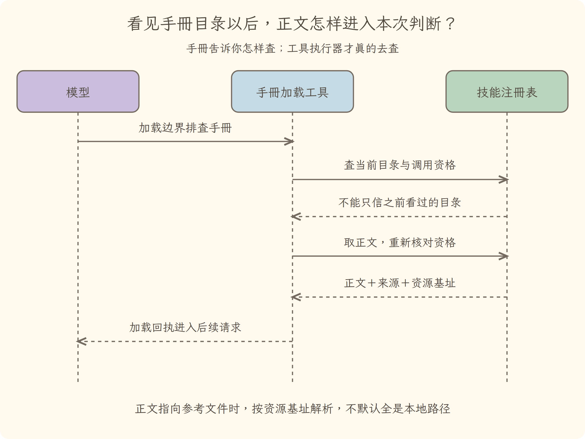
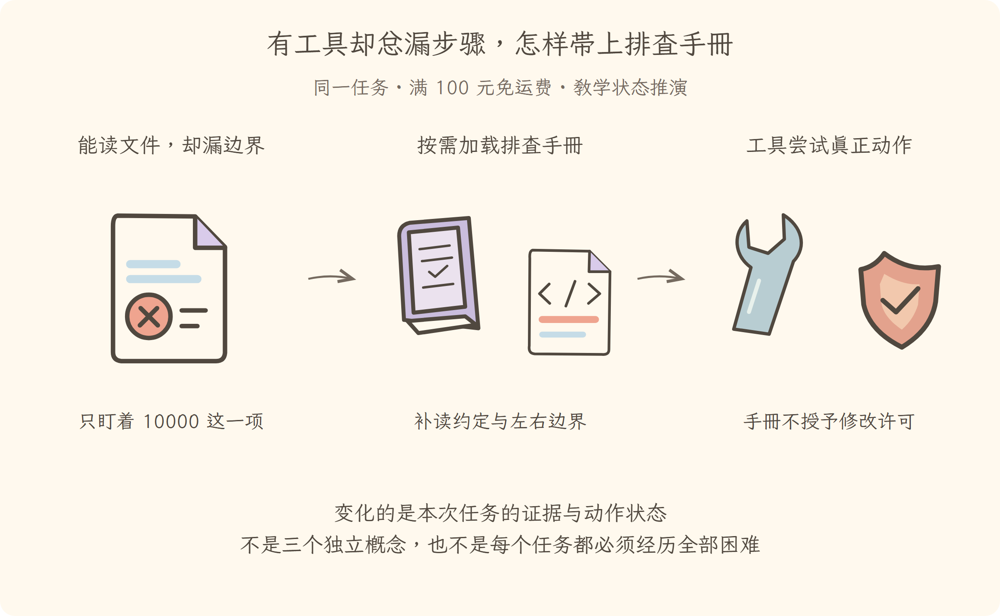

学习导航
第06讲 · 有工具却总漏步骤，怎样带上排查手册
源码基线：cd5ef8148158c3a752a658978873241fdf8e2bbc。业务案例为虚构 Java 运费服务；图与流程是教学推演，源码事实另有固定证据。
从这里接上
能取得材料，但可能忘记业务约定与边界测试。本讲要回答：有工具却总漏步骤，怎样带上排查手册？
上一讲解决了“日志记录事实，再派生下一次请求的消息”；这仍不能代替本讲要补的责任。
阅读与完成标准
先看逐步讲解，再做练习。视觉课件用于复习，词典随用随查，不要求先背英文。预计正文阅读 20–35 分钟，练习 10–20 分钟；这是安排建议，不是学会的证明。
读完应能解释：加载排查手册以后，是否自动有写文件能力？ 还要能预测：报告来自外部平台，应新增手册还是接入工具？ 最后从源码证据定位相应责任。
现在必须懂的是本讲怎样改变证据或动作状态；具体框架中的其他选项知道存在即可，不用一次读完整个包。语法卡住可查补课 A、补课 B，工程定位查补课 C，看完返回此处即可。
工程深度验收
能追踪目录发现、按名加载和资格复核；能区分外部目录同步的准备失败与交换失败。 先预测练习中的分支，再按正文命令观察；只读解释、测试替身和真实执行环境分别记录，不混为一项。
本讲交接
加载方法说明，并分清手册、工具和外部协议接入。但下一步还要解决：读错工作区或执行被拒绝怎么办。
← 第05讲：会话日志 · 第07讲：执行边界 →
视觉课件
第06讲 · 有工具却总漏步骤，怎样带上排查手册
工程图解：看见手册目录以后，正文怎样进入本次判断？

能追踪目录发现、按名加载和资格复核；能区分外部目录同步的准备失败与交换失败。 本图与原有场景图互补，具体分支与边界见逐步讲解。
源码基线：cd5ef8148158c3a752a658978873241fdf8e2bbc。业务案例为虚构 Java 运费服务；图与流程是教学推演，源码事实另有固定证据。
当前现场
能取得材料，但可能忘记业务约定与边界测试。固定业务约定不变：满 10000 分免运费；原实现在等于时返回 800。禁止用修改预期的方式让测试变绿。

三分钟复述
先描述左格缺什么，再说明中格采取的机制，最后指出右格新增了哪些证据或责任。加载方法说明，并分清手册、工具和外部协议接入。不要只读图上的物件名；删掉中间这项机制，任务会在哪一步失去依据？
本讲最容易误会的是：报告来自外部平台，应新增手册还是接入工具？ 若缺的是获取报告的动作，需要接入能力；手册改善方法。外部协议只是接入方式，结果仍需查验。
从图返回源码
图只表达教学关联与状态变化，不代替完整调用顺序。源码定位提供实现或契约证据，正文解释映射和边界。
← 第05讲：会话日志 · 第07讲：执行边界 →
逐步讲解
第06讲 · 有工具却总漏步骤，怎样带上排查手册
源码基线：cd5ef8148158c3a752a658978873241fdf8e2bbc。业务案例为虚构 Java 运费服务；图与流程是教学推演，源码事实另有固定证据。
一、证据记住了，排查习惯却没有自动形成
第五讲的日志能够保留失败报告。可是下一次类似任务，助手仍可能只修 10000 这一个输入，忘记检查左右边界。把这次成功的方法总结成可发现、可加载的说明，就能减少每次重新解释的成本。
Skill（技能说明）像放在工作台上的排查手册：先核对业务约定，再读报告和实现，提出原因，得到许可后修改，最后测试边界。它主要提供指令内容，不是可执行工具，也不是授予权限的证书。手册说“运行测试”，仍需要工具和正确环境去做。
三格为同一运费任务的教学状态变化或故障对照。图不是实际运行日志；关键区别见各格说明。
二、先看目录，再按需拿整本手册
如果每次都把所有手册全文塞进请求，会挤掉真正重要的报告和代码。本项目把发现与读取分开：目录提供名称和简述；匹配任务时，再通过加载工具取得完整内容。
可以想成书架索引卡和书本正文。索引卡写“边界条件排查”，并不意味着模型已经读懂其中的每一步。用户明确要求使用某份手册时，只看见目录而不加载正文，也不能称为遵循了手册。
以下是固定提交中的定位片段（连续原文；中文说明放在代码之外）：
const skillTool = defineTool({
name: 'skill',
description: 'Load the full instructions for an available skill. Call this with the exact skill name from the session skill catalog before acting on a task that names or clearly matches that skill.',
parameters: {
name: { type: 'string', required: true, description: 'The exact skill name from the available skills list.' },
},
这里的 skill 是模型可调用的加载工具，参数是精确名称。再向后读 名称与可见性检查：工具根据当前范围查目录和正文。目录、正文、当前是否允许调用，是不同问题。
2.1 为什么读取正文时还要再检查一次
假设模型上一轮看见“运费边界排查手册”，这一轮决定加载，但期间当前工作区切换或技能注册发生变化。不能凭旧目录认定现在仍可读取。实现把当前工作目录、取消信号和当前智能体作用域一起传给技能注册表，先查当前目录和模型调用资格，再取完整定义，并在定义上再次核对资格。
代入三种情况：名称格式不合法，加载前拒绝；旧目录有、当前目录没有，报告未知或已不可用；目录可见但禁止模型主动调用，不能因为猜中了精确名称就越过限制。错误应通过工具回执回到后续判断，而不是偷偷改用一份同名旧正文。
加载结果除名称、提供者和正文外，还可能带 Resource Base（资源基址），它回答正文中的相对参考路径从哪里解析。目录型基址可指向本地技能目录，网址型或不透明资源标识则需要相应访问方式；不能把所有资源都拼成当前工作区的文件路径。像 Java 类路径里的资源和本地文件路径都能“找到内容”，解析规则却不一样。
另外，用户明确调用入口在步骤准入时识别用户来源消息中的明确技能调用形式，直接注入允许用户调用的技能内容。具体识别以解析函数与测试为准，不能仅凭附近“首行”的注释排除句中合法手势。它与模型主动调用加载工具是两条路径；外部报告里写出同样的字样，不能伪造可信用户手势。目录只解决发现，载入解决内容可见，是否执行每项动作仍由模型选择与执行约束共同决定。
三、一份真正有用的案例手册应该写什么
下面是本书建议的手册正文，不是上游自带的一项技能：
先读取失败报告、业务约定和相关实现。
分别列出已知事实与待验证猜测。
仅排查时不要修改；得到限定授权后只改原因所在位置。
保留测试预期，重跑阈值前、等于阈值、阈值后三项。
结束时给出命令、结果、版本与尚未验证范围。
这五条的价值不在格式，而在能改变动作选择。例如读到了报告却没有约定时，手册会促使补读；测试工具失败时，手册会阻止把“已尝试”写成“已验证”。如果指令只是重复“认真、专业、准确”，就没有解决具体遗漏。
四、外部测试平台不是另一种手册
假设报告不在本地，而在外部测试平台。现在缺的是接入能力，不是检查方法。MCP（模型上下文协议）可以作为外部能力的一种接入协议；在本项目中，客户端把外部工具转换并注册到运行支撑的工具体系。
读 外部工具桥接 和 调用请求。桥接要保存外部服务器和原始工具名的身份关系，再发送协议请求；不能把显示名称随便拆开来猜原始身份。
可以类比 Java 服务的接口适配层，但协议工具仍可能失败、超时、返回不可信内容。接入成功不表示我们对该平台的数据拥有访问许可，也不表示返回内容成为系统指令。
4.1 沿工具身份追到外部服务
假设服务器叫 ci，原工具叫 read_report，桥接后给模型的公开名称可以是 mcp__ci__read_report。这个名字便于区分不同服务器上的同名工具，但线上请求仍要发送原始工具名。实现保存“服务器名、原始名”的身份关系，不靠反向拆公开字符串恢复原名；规范化可能改变字符，拆字符串会把显示规则误当协议身份。
| 所在层 |
本例身份或数据 |
该层责任 |
| 模型可见工具目录 |
规范化后的公开工具名及参数说明 |
让模型选择工具 |
| 本地工具运行时 |
已注册定义与当前执行上下文 |
参数、策略、取消及最终回执 |
| 桥接调用 |
原服务器与原始工具名、调用参数 |
发出协议请求并整理返回 |
| 外部测试服务 |
报告实际内容或错误 |
提供外部证据，不提供用户授权 |
再看工具目录重新同步。实现先完整拉取并构造下一代定义，此阶段不触碰旧注册。拉取失败时，旧目录仍可保留；到交换阶段才移除旧注册并安装新一代。若新注册出现冲突，它清理本次已经注册的部分，不留下半套目录。这里不能说成“任何同步失败都自动恢复旧版”：交换阶段的冲突可以让该服务器当前注册集变为空。
这像热更新路由表：先准备新表，再切换；准备失败与切换失败的恢复责任不同。把两阶段区分清楚，排查时才能解释“服务器仍连接着，模型却看不到那项工具”究竟发生在哪一层。
五、手册、工具和模型各自还欠什么
模型选择下一步，手册改善选择方法，工具提供动作，执行策略限制动作。四者有重叠的使用场景，却不是相同职责。多安装手册不会自动多出磁盘权限，多接一个工具也不会自动保证模型善用它。
本讲的实验不是比一比两段回答哪段好听，而是验证具体分支：移除当前可见手册后是否拒绝旧名加载；外部数据能否冒充用户明确调用；目录拉取失败是否保住原注册；交换冲突是否清理半套注册。对应上游局部测试命令如下，实际执行状态见整书验证记录，不把命令存在当成已经通过：
node node_modules/vitest/vitest.mjs run packages/skill/tool-skill/tests/tool-skill.spec.ts packages/mcp/mcp-client/tests/mcp-client.spec.ts --maxWorkers=1 --no-file-parallelism
取舍也由此清楚：按需加载减少常驻提示开销，却增加发现与加载两阶段；外部协议减少逐个写定制接口的成本，却增加连接、命名、同步和不可信返回处理。只在它们确实解决方法复用或外部能力缺口时采用，不把安装数量当智能体水平。
回到运费案例：用手册确保不漏边界，用工具读取报告，用源码验证原因，用执行策略守住授权。下一讲进一步追问：即使工具已接好，它到底在哪个工作区操作，受什么边界约束？
← 第05讲：会话日志 · 第07讲：执行边界 →
分享稿
第06讲 · 有工具却总漏步骤，怎样带上排查手册
工程复述时，不要只背术语：能追踪目录发现、按名加载和资格复核；能区分外部目录同步的准备失败与交换失败。 用练习中的反例说明边界，再展示对应实现和实际测试结果。
源码基线：cd5ef8148158c3a752a658978873241fdf8e2bbc。业务案例为虚构 Java 运费服务；图与流程是教学推演，源码事实另有固定证据。
用自己的话讲给同事
我们还在查同一个 Java 运费问题：满 100 元应免运费，恰好边界却收了 8 元。走到本讲，已有条件是：能取得材料，但可能忘记业务约定与边界测试。
如果不补这一层，会遇到的问题是：加载排查手册以后，是否自动有写文件能力？ 没有。手册是指令，执行仍依赖工具、提供者和授权；它不能代替任何一层。 所以本讲新增的不是要背的名词，而是任务中一项明确的责任。
现在能做到：加载方法说明，并分清手册、工具和外部协议接入。但还要守住反例：报告来自外部平台，应新增手册还是接入工具？ 若缺的是获取报告的动作，需要接入能力；手册改善方法。外部协议只是接入方式，结果仍需查验。
请结合本讲图说出变化，再指向源码；不要宣称这段教学推演就是实际模型日志。下一讲顺着“读错工作区或执行被拒绝怎么办”继续。